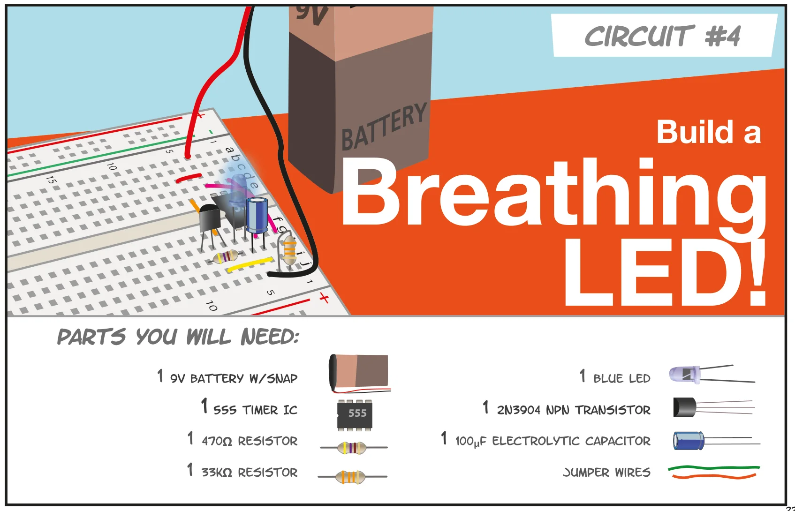
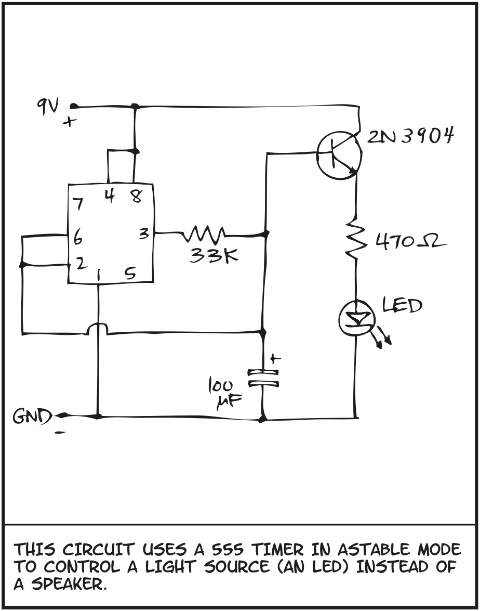
This circuit uses a 555 timer in astable mode to control a light source (an LED) instead of a speaker.
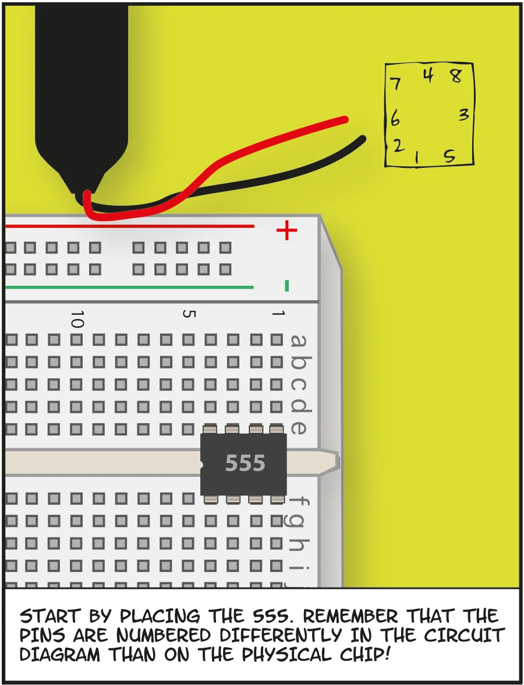
Start by placing the 555. Remember that the pins are numbered differently in the circuit diagram than on the physical chip!
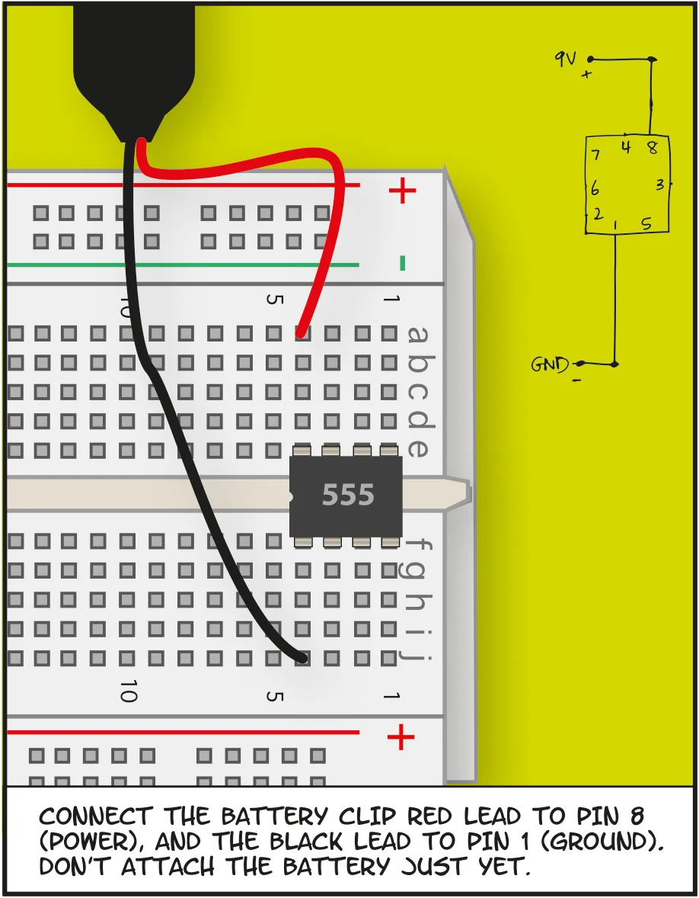
Connect the battery clip red lead to pin 8 (power), and the black lead to pin 1 (ground). Don’t attach the battery just yet.
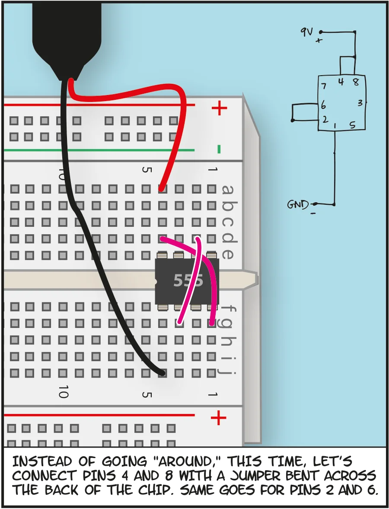
Instead of going "around," this time, let’s connect pins 4 and 8 with a jumper bent across the back of the chip. Same goes for pins 2 and 6.
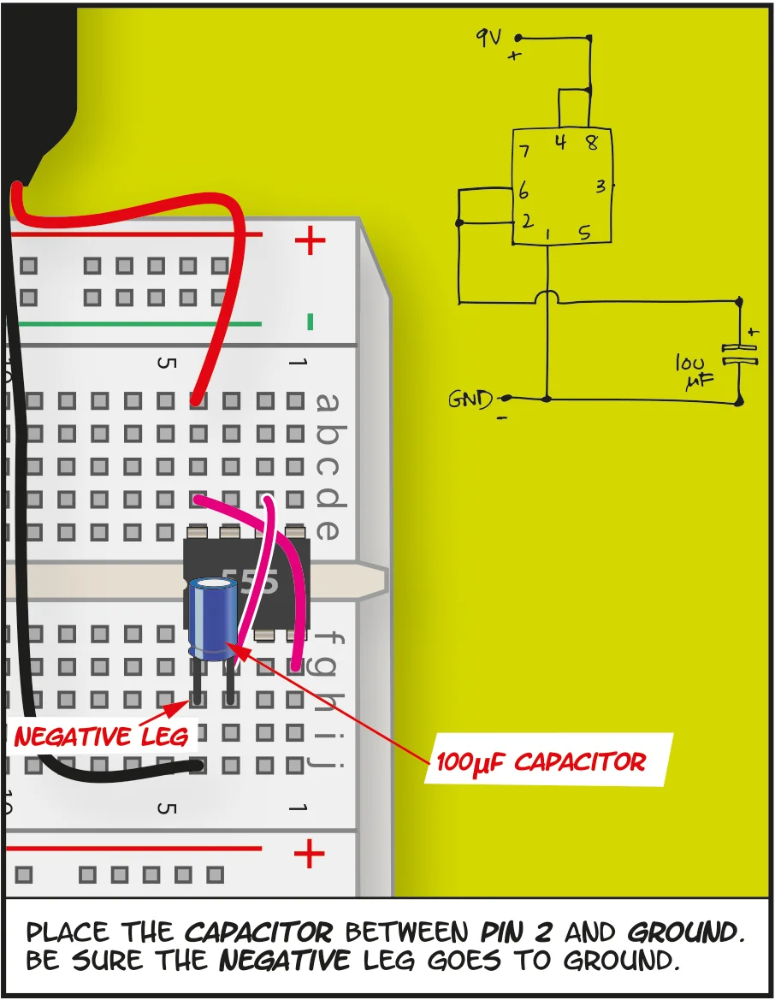
Place the capacitor between pin 2 and ground. Be sure the negative leg goes to ground.
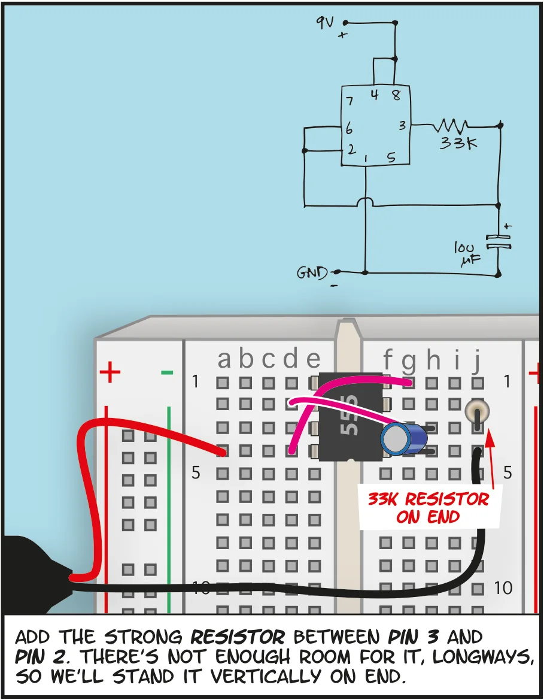
Add the strong resistor between pin 3 and pin 2. There’s not enough room for it, longways, so we’ll stand it vertically on end.
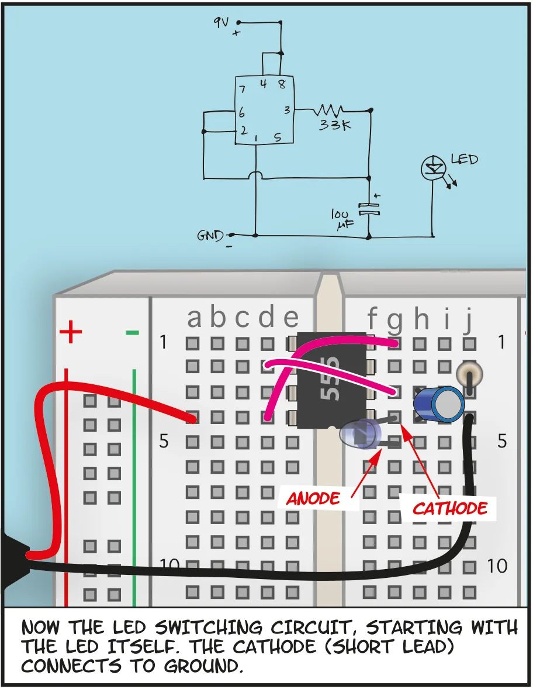
Now the LED switching circuit, starting with the LED itself. The cathode (short lead) connects to ground.
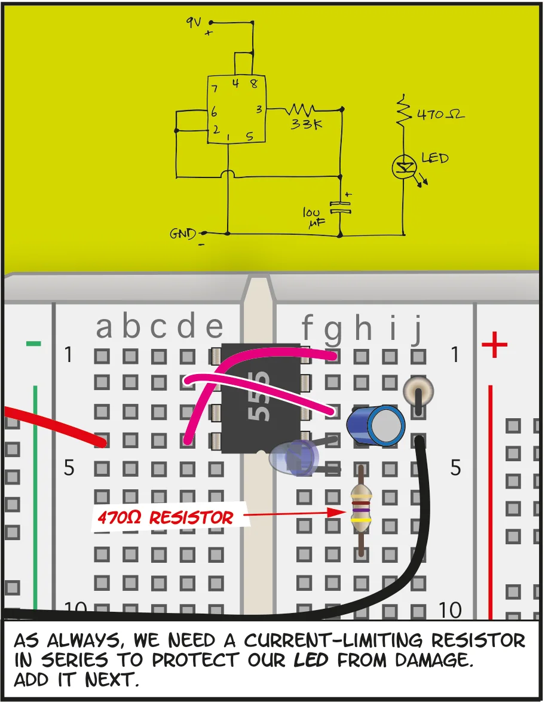
As always, we need a current-limiting resistor in series to protect our LED from damage. Add it next.
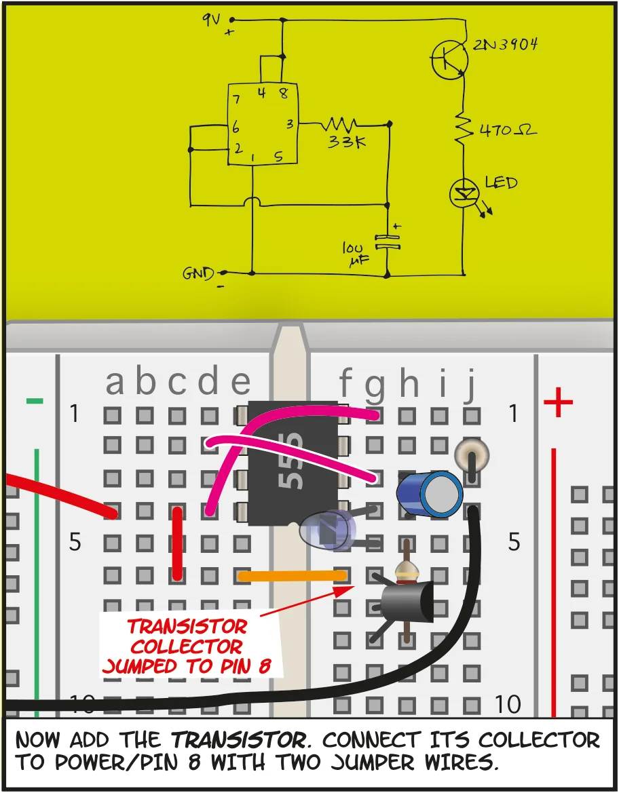
Now add the transistor. Connect its collector to power/pin 8 with two jumper wires.
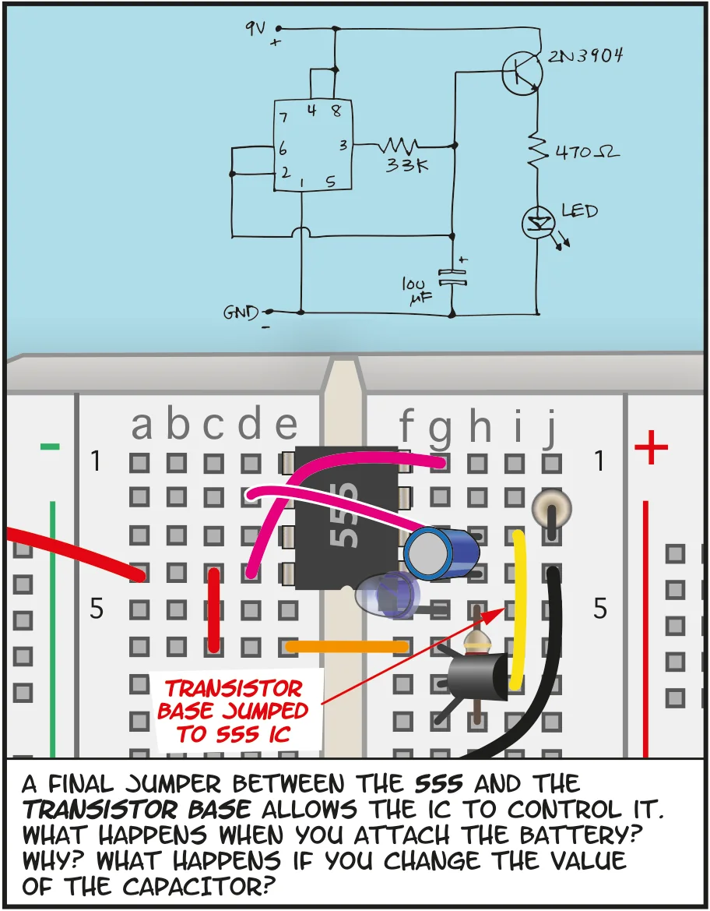
A final jumper between the 555 and the transistor base allows the IC to control it. What happens when you attach the battery? Why? What happens if you change the value of the capacitor?